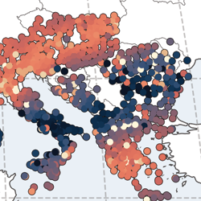
SOON
Large-N Observations of Surface Wave Holograms
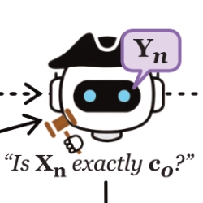
NEW
Probabilistic Guarantees for Reducing Contextual Hallucinations in
LLMs
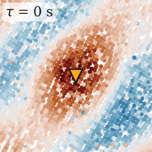
NEW
Source effects in higher-order ambient seismic field correlations
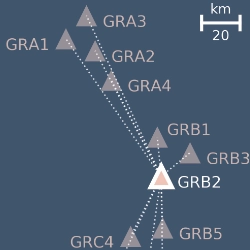
Unlocking the potential of single stations to replace seismic arrays
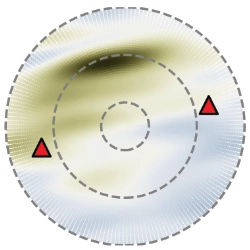
Imprints of time-dependent microseism source distributions on the
coda of correlations
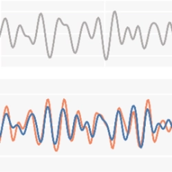
Predictive modeling of seismic wave fields: Learning the transfer
function using encoder-decoder networks
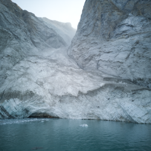
A rockslide-generated tsunami in a Greenland fjord rang Earth for 9
days
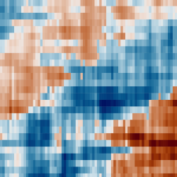
Stacking of distributed dynamic strain reveals link between seismic
velocity changes and the 2020 unrest in Reykjanes
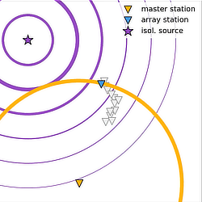
Continuous isolated noise sources induce repeating waves in the coda
of ambient noise correlations
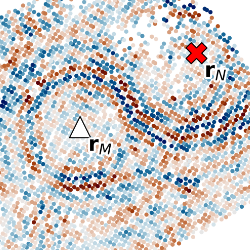
Seismic Interferometry in the presence of an isolated source
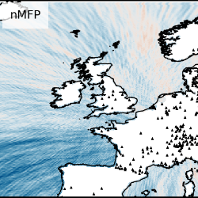
Matched Field Processing accounting for complex Earth structure:
method and review
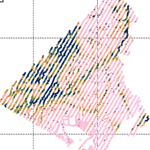
Characteristics of the ambient seismic field on a large-N seismic
array in the Vienna basin
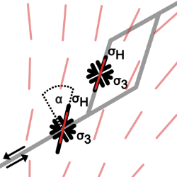
Azimuthal anisotropy in the wider Vienna basin region: a proxy for
the present-day stress field and deformation
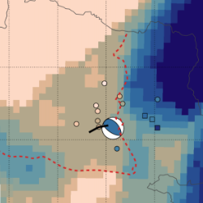
The Alland earthquake sequence in Eastern Austria: Shedding light on
tectonic stress geometry in a key area of seismic hazard
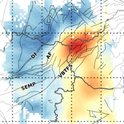
Ambient noise tomography of the wider Vienna Basin region